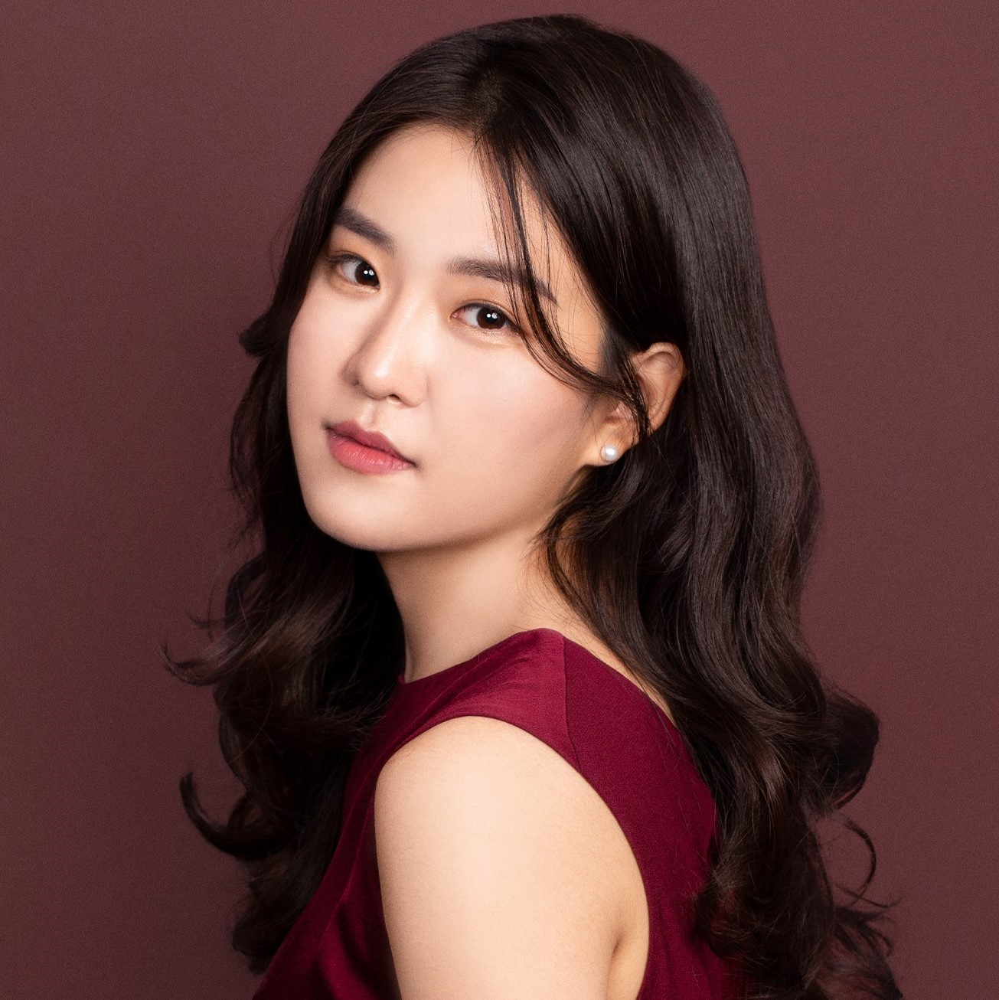
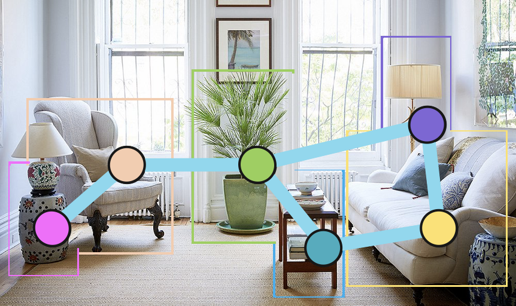
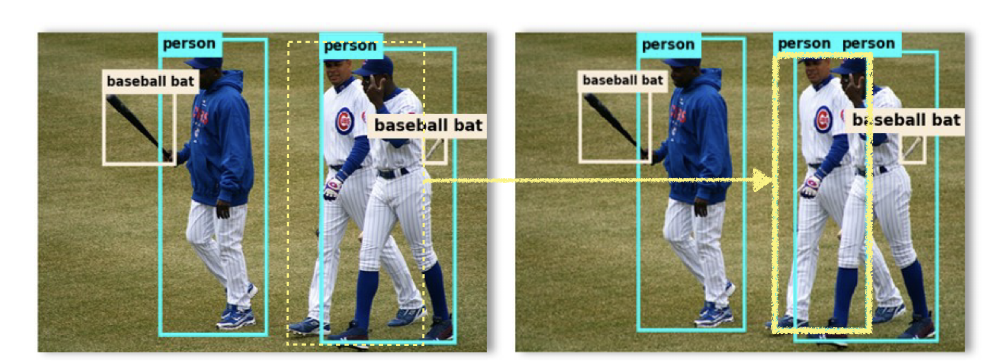
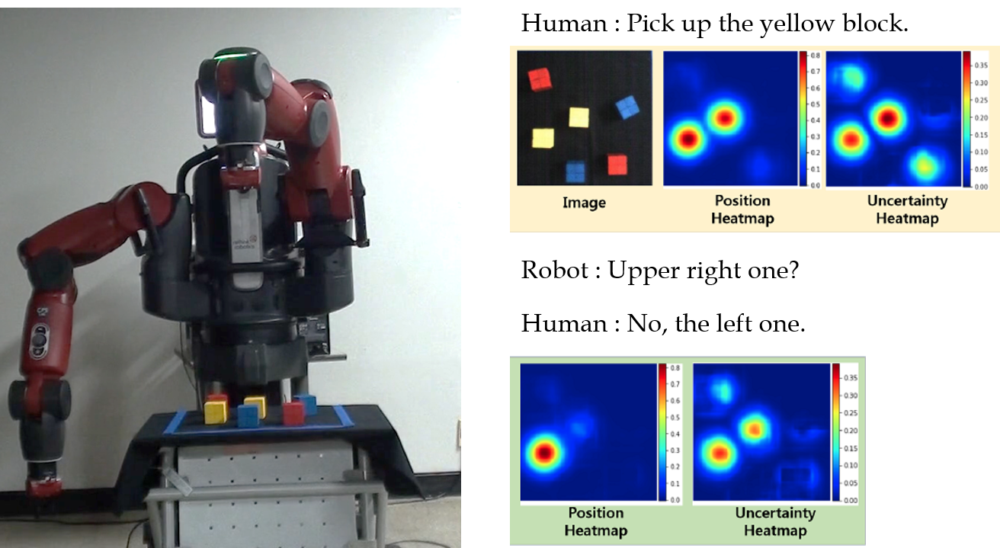

|

|
I am currently working as a researcher at Samsung Advanced Institute of Technology (SAIT). I received my Ph.D. from Seoul National University, where I was advised by Professor Songhwai Oh. My research focuses on the visual navigation of embodied agents and interactive 3D perceptions of embodied agents. Prior to my Ph.D. studies, I earned a B.S. degree with great honors from Korea University in the Department of Electrical Engineering in 2016. I also had the opportunity to study abroad for a semester at the Australian National University. |
Updates
[Mar 2023] Start working @ SAIT autonomous car team. [Feb 2023] Invited talk @ KAIST. [Dec 2022] Successfully finished Ph.D. Thesis Defense. [Dec 2022] Oral presentation at CoRL 2022. [Nov 2022] Poster presentation of TSGM at AIIS Retreat @ Seoul National Univ. [Sep 2022] TSGM accepted to CoRL 2022 as an oral presentation. [Jun 2022] Invited talk @ Intelligent Robotics Course of Korea Univ. [Jul 2021] VGM accepted to ICCV 2021.Publications (representative papers are highlighted)

|
Topological
Semantic
Graph Memory for Image-Goal Navigation
Nuri Kim, Obin Kwon, Hwiyeon Yoo, Yunho Choi, Jeongho Park, and
Songhwai
Oh. Conference on Robot Learning (CoRL-22) Oral presentation (acceptance rate: 6.5%) |
|  |
Semantic Descriptors into Representation for Robust
Indoor Visual Place Recognition
Nuri Kim, Minjae Kang, and Songhwai Oh.International Conference on Control, Automation and Systems (ICCAS-21) |

|
Visual Graph Memory with Unsupervised
Representation
for Visual Navigation
Obin Kwon, Nuri Kim, Yunho Choi, Hwiyeon Yoo, Jeongho Park, and
Songhwai
Oh.International Conference on Computer Vision (ICCV-21) webpage | pdf | video | code |
|  |
Learning Instance-Aware Object Detection Using Determinantal Point Processes
Nuri Kim, Donghoon Lee, and Songhwai Oh. Computer Vision and Image Understanding (CVIU-20) pdf | code |
|  |
Interactive Text2Pickup Networks for Natural
Language-Based Human-Robot Collaboration
Hyemin Ahn, Sungjoon Choi, Nuri Kim, Geonho Cha, and Songhwai
Oh.IEEE Robotics and Automation Letters (RAL-18) and IEEE/RSJ International Conference on Intelligent Robots and Systems (IROS-18) pdf | video |
Talks
Semantic Visual Navigation for Embodied Agents: A Graph-Based Approach
Seminar, KAIST, Feb 2023Slides
CoRL 2022 Review
Lab Seminar, Seoul National University, Jan 2023Slides
Oral Presentation of TSGM
Conference on Robot Learning, Auckland, New Zealand, Dec 2022Video, Slides
Topological Semantic Graph Memory
AIIS Retreat, Seoul National University, Nov 2022Poster
Introduction to Visual Navigation
Intelligent Robotics Course, Korea University, June 2022Slides
Honors and Awards
Teaching Experience
Projects
- - Developed an indoor environment navigation robot that works even in unknown environments by leveraging
semantic
understanding when maps are unavailable.
- - Developed a robot navigation technology capable of predicting crowd trajectories and performing social
actions in various crowd cluster scenarios.
- - Developed a reliable object detector in occluded environments.
- - Collected 3D point cloud data for dynamic object registration and alignment.
Personal Projects
- - Development of algorithms for finding an optimal portfolio ratio.